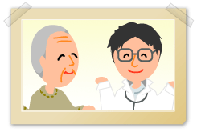

認知症と診断を受けて不安になり、他の専門医にも相談したいと思うときがあります。今はセカンドオピニオンといって第二の意見を聞いてみるのもいいでしょう。
「主治医に失礼になるのでは」とか、「転院しないといけないの」という心配はありません。
主治医との良好な関係を保ちながら、複数の医師の意見を聞くことです。「インフォームド・コンセント（説明責任と同意）」という考えを持っている医師でしたら治療法を決定するのは患者や家族であることを十分認識しているからです。
医療が進歩してさまざまな治療法が生まれています。その結果、病気に対する考え方が違うことがあります。また、医師や病院によって、医療技術や診療の質に差があることも考えられます。そこで、ご本人様に最善と考えられる治療を、ご本人様と主治医で判断するため、主治医以外の医師の意見を聞くこと。それがセカンドオピニオンです。場合によっては、医師をかえることになります。
納得して治療法を選ぶことは、ご本人様の持つ基本的な権利です。
同じ手術をするとしても、「どんなリスクがあるのか」「ほかにどんな選択肢があるのか」を知ったうえで行うことは、非常に重要なことです。セカンドオピニオンは、ご本人様の権利を守ると同時に、医師にとっても誤診を回避するなど多くのメリットを持ったしくみです。
|